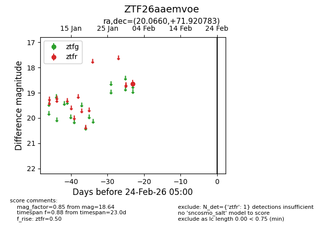
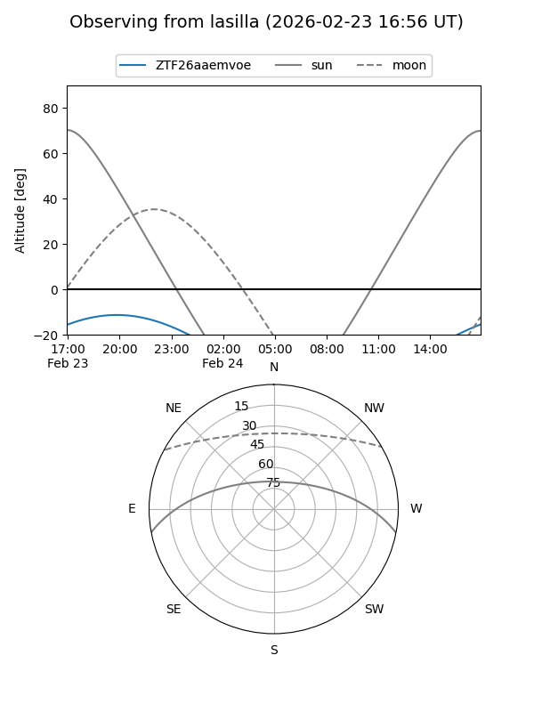
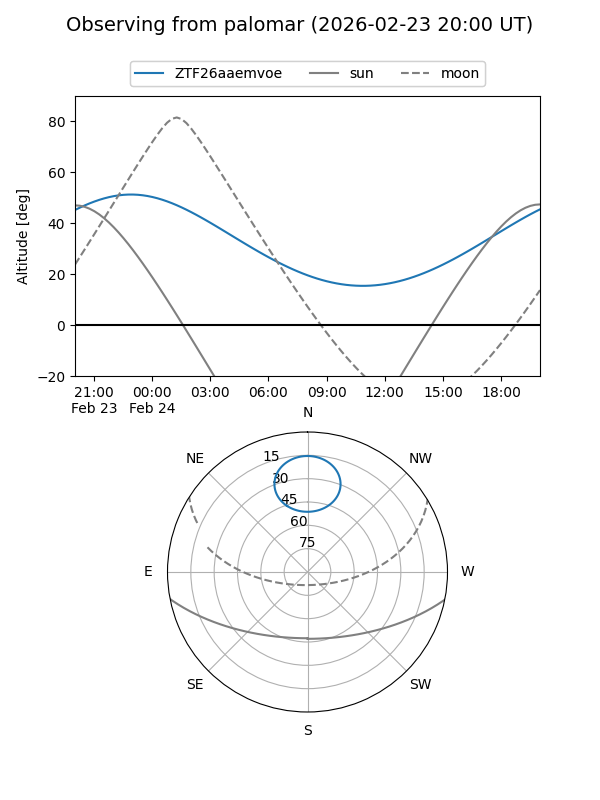

ZTF26aaemvoe
Target ZTF26aaemvoe at 2026-02-24 09:08
Aliases and brokers:
FINK: link
Lasair: link
ALeRCE: link
alt names
ZTF26aaemvoe (ztf,fink_ztf)
Coordinates:
equatorial (ra, dec) = 20.0660,+71.92078
equatorial (HMS+DMS) = 01:20:15.83,+71:55:14.82
galactic (l, b) = (125.1919,+9.17564)
Flags:
Photometry:
last ztfr=18.64
1 ztfr detections
Lightcurve

Visibility


Additional plots